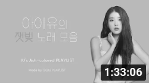

짚이는 구석.
짚이는 구석.
-
 [𝐏𝐥𝐚𝐲𝐥𝐢𝐬𝐭] 잠들기 전 듣는 아이유 노래모음 J playlist 조회수 1.2만회·4개월 전
[𝐏𝐥𝐚𝐲𝐥𝐢𝐬𝐭] 잠들기 전 듣는 아이유 노래모음 J playlist 조회수 1.2만회·4개월 전 -
가슴 한편이 뭉클해지는 아이유 노래 모음 IU Touching songs PLAYLIST 아이유라는장르-GOIU PLAYLIST 조회수 675만회·1년 전
-

아이유의 잿빛 노래 모음 IU's Ash-Colored PLAYLIST 아이유라는장르-GOIU PLAYLIST 조회수 88만회·1년 전